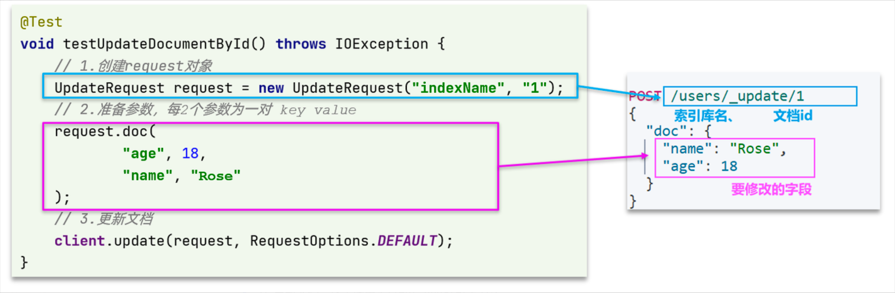
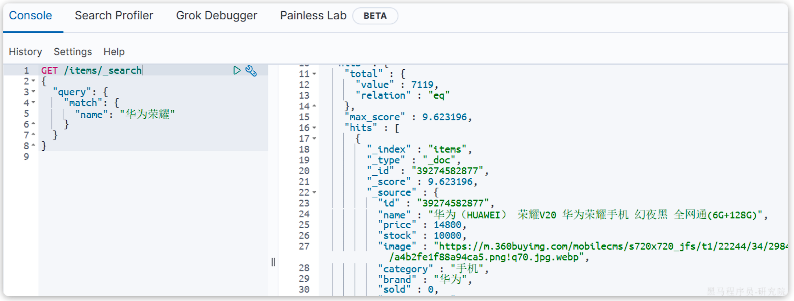
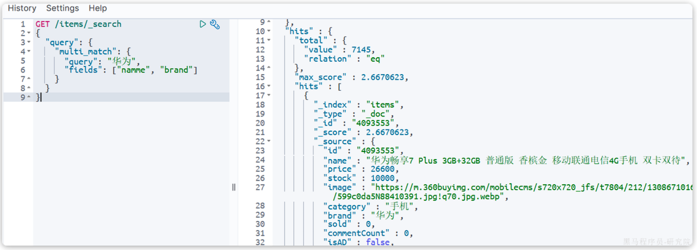
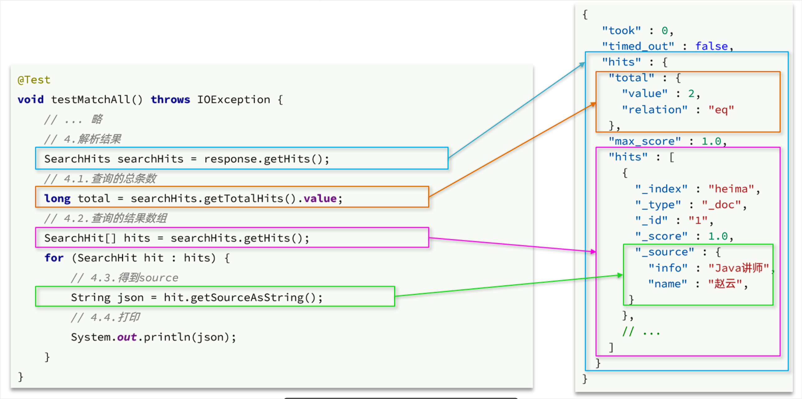
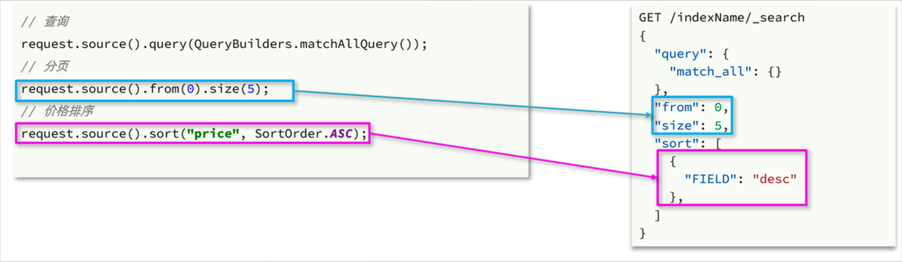
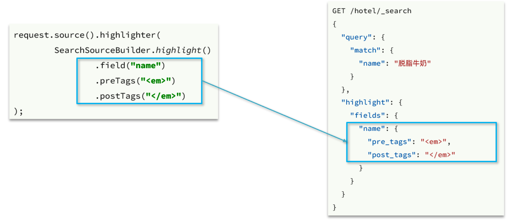
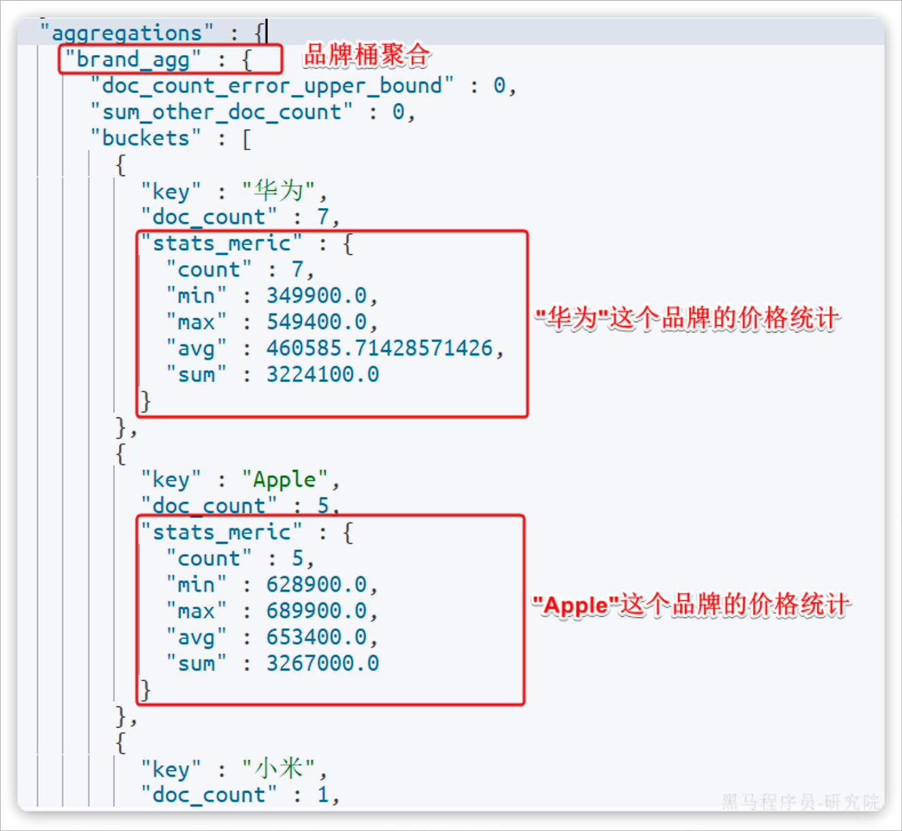
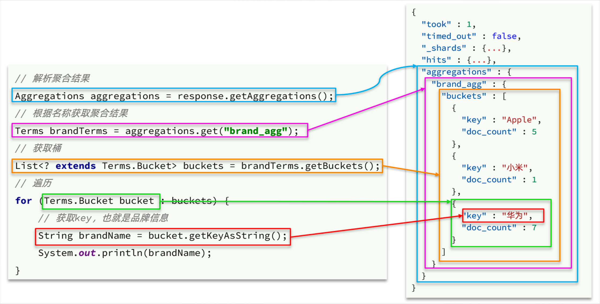

Elasticsearch
Elasticsearch：官方分布式搜索和分析引擎 | Elastic
数据库的模糊搜索功能单一，匹配条件非常苛刻，必须恰好包含用户搜索的关键字。
而在搜索引擎中，用户输入出现个别错字，或者用拼音搜索、同义词搜索都能正确匹配到数据。在面临海量数据的搜索，或者有一些复杂搜索需求的时候，推荐使用专门的搜索引擎来实现搜索功能。
Elasticsearch是由elastic公司开发的一套搜索引擎技术，它是elastic技术栈中的一部分。完整的技术栈包括：
- Elasticsearch：用于数据存储、计算和搜索
- Logstash/Beats：用于数据收集
- Kibana：用于数据可视化
整套技术栈被称为ELK，经常用来做日志收集、系统监控和状态分析等等
安装¶
1.docker安装elasticsearch
docker run -d \
--name es \
-e "ES_JAVA_OPTS=-Xms512m -Xmx512m" \
-e "discovery.type=single-node" \
-v es-data:/usr/share/elasticsearch/data \
-v es-plugins:/usr/share/elasticsearch/plugins \
--privileged \
--network work \
-p 9200:9200 \
-p 9300:9300 \
elasticsearch:7.12.1
Note
-e "ES_JAVA_OPTS=-Xms512m -Xmx512m" 设置Java虚拟机内存
-e "discovery.type=single-node" 设置单机模式
2.docker安装Kibana
docker run -d \
--name kibana \
-e ELASTICSEARCH_HOSTS=http://es:9200 \
--network=work \
-p 5601:5601 \
kibana:7.12.1
Tip
-e ELASTICSEARCH_HOSTS=http://es:9200 设置elasticsearch地址，同一docker网络中可使用容器名
访问5601端口即可进入图形化界面
初识ES¶
倒排索引¶
elasticsearch之所以有如此高性能的搜索表现，正是因为底层的倒排索引技术。
倒排索引的概念是基于MySQL这样的正向索引而言的。
Info
根据id精确匹配时，可以走索引，查询效率较高。而当搜索条件为模糊匹配时，由于索引无法生效，导致从索引查询退化为全表扫描，效率很差。 因此，正向索引适合于根据索引字段的精确搜索，不适合基于部分词条的模糊匹配。
倒排索引中有两个非常重要的概念：
- 文档（
Document）：用来搜索的数据，其中的每一条数据就是一个文档。例如一个网页、一个商品信息 - 词条（
Term）：对文档数据或用户搜索数据，利用某种算法分词，得到的具备含义的词语就是词条。例如：我是中国人，就可以分为：我、是、中国人、中国、国人这样的几个词条
创建倒排索引是对正向索引的一种特殊处理和应用，流程如下：
- 将每一个文档的数据利用分词算法根据语义拆分，得到一个个词条
- 创建表，每行数据包括词条、词条所在文档id、位置等信息
- 因为词条唯一性，可以给词条创建正向索引
此时形成的这张以词条为索引的表，就是倒排索引表，两者对比如下：
正向索引
| id（索引） | title | price |
|---|---|---|
| 1 | 小米手机 | 3499 |
| 2 | 华为手机 | 4999 |
| 3 | 华为小米充电器 | 49 |
| 4 | 小米手环 | 49 |
| ... | ... | ... |
倒排索引
| 词条（索引） | 文档id |
|---|---|
| 小米 | 1，3，4 |
| 手机 | 1，2 |
| 华为 | 2，3 |
| 充电器 | 3 |
| 手环 | 4 |

正向索引：
- 优点：
- 可以给多个字段创建索引
- 根据索引字段搜索、排序速度非常快
- 缺点：
- 根据非索引字段，或者索引字段中的部分词条查找时，只能全表扫描。
倒排索引：
- 优点：
- 根据词条搜索、模糊搜索时，速度非常快
- 缺点：
- 只能给词条创建索引，而不是字段
- 无法根据字段做排序
IK分词器¶
Elasticsearch的关键就是倒排索引，而倒排索引依赖于对文档内容的分词，而分词则需要高效、精准的分词算法，IK分词器就是这样一个中文分词算法。
安装¶
方案一：在线安装
运行一个命令即可：
docker exec -it es容器名 ./bin/elasticsearch-plugin install https://release.infinilabs.com/analysis-ik/stable/elasticsearch-analysis-ik-7.12.1.zip
然后重启es容器：
docker restart es容器名
方案二：离线安装
查看之前安装的Elasticsearch容器的plugins数据卷目录：
docker volume inspect es-plugins
将插件复制到容器挂载的目录，重启容器即可
使用¶
IK分词器包含两种模式：
ik_smart：智能语义切分ik_max_word：最细粒度切分
我们在Kibana的DevTools上测试分词器，首先测试Elasticsearch官方提供的标准分词器：
POST /_analyze
{
"analyzer": "standard",
"text": "Elasticsearch是一个基于Lucene的搜索服务器"
}
Note
标准分词器适用于英文分词，中文分词效果不好
中文建议使用ik_smart模式
拓展词典¶
随着互联网的发展，“造词运动”也越发的频繁。出现了很多新的词语，在原有的词汇列表中并不存在。
所以要想正确分词，IK分词器的词库也需要不断的更新，IK分词器提供了扩展词汇的功能。
1.打开IK分词器config目录：

Tip
注意，如果采用在线安装的通过，默认是没有config目录的，需要自己创建
2.在IKAnalyzer.cfg.xml配置文件内容添加：
<?xml version="1.0" encoding="UTF-8"?>
<!DOCTYPE properties SYSTEM "http://java.sun.com/dtd/properties.dtd">
<properties>
<comment>IK Analyzer 扩展配置</comment>
<!--用户可以在这里配置自己的扩展字典 *** 添加扩展词典-->
<entry key="ext_dict">ext.dic</entry>
<entry key="ext_stopwords"></entry> <!-- 停用词配置 -->
<entry key="remote_ext_dict"></entry> <!-- 远程词典 -->
</properties>
3.在IK分词器的config目录新建一个 ext.dic，可以参考config目录下复制一个配置文件进行修改
一坤年
泰裤辣
基础概念¶
文档和字段¶
Elasticsearch是面向文档（Document）存储的，可以是数据库中的一条商品数据，一个订单信息。
文档数据会被序列化为json格式后存储在elasticsearch，因此，原本数据库中的一行数据就是ES中的一个JSON文档
而数据库中每行数据都包含很多列，这些列就转换为JSON文档中的字段（Field）。
{
"id": 1,
"title": "小米手机",
"price": 3499
}
{
"id": 2,
"title": "华为手机",
"price": 4999
}
{
"id": 3,
"title": "华为小米充电器",
"price": 49
}
...
索引和映射¶
随着业务发展，需要在es中存储的文档也会越来越多，比如有商品的文档、用户的文档、订单文档等等，所有文档都散乱存放显然非常混乱，也不方便管理。
因此，我们要将类型相同的文档集中在一起管理，称为索引（Index）（索引类似于数据库中“表”的概念）
数据库的表会有约束信息，用来定义表的结构、字段的名称、类型等信息。因此，索引库中就有映射（mapping），是索引中文档的字段约束信息，类似表的结构约束。
MySQL 与 Elasticsearch
| MySQL | Elasticsearch | 说明 |
|---|---|---|
| Table | Index | 索引(index)，就是文档的集合，类似数据库的表(table) |
| Row | Document | 文档（Document），就是一条条的数据，类似数据库中的行（Row），文档都是JSON格式 |
| Column | Field | 字段（Field），就是JSON文档中的字段，类似数据库中的列（Column） |
| Schema | Mapping | Mapping（映射）是索引中文档的约束，例如字段类型约束。类似数据库的表结构（Schema） |
| SQL | DSL | DSL是elasticsearch提供的JSON风格的请求语句，用来操作elasticsearch，实现CRUD |
在企业中，往往是两者结合使用：
- 对安全性要求较高的写操作，使用mysql实现
- 对查询性能要求较高的搜索需求，使用elasticsearch实现
- 两者再基于某种方式，实现数据的同步，保证一致性

索引库操作¶
Mapping映射属性¶
Mapping是对索引库中文档的约束，常见的Mapping属性包括：
type：字段数据类型，常见的简单类型有：- 字符串：
text（可分词的文本）、keyword（精确值，不应分词，例如：品牌、国家、ip地址） - 数值：
long、integer、short、byte、double、float、 - 布尔：
boolean - 日期：
date - 对象：
object
- 字符串：
index：是否创建索引（是否参与搜索），默认为trueanalyzer：使用哪种分词器properties：该字段的子字段
例如下面的json文档：
{
"age": 21,
"weight": 52.1,
"isMarried": false,
"info": "黑马程序员Java讲师",
"email": "zy@itcast.cn",
"score": [99.1, 99.5, 98.9],
"name": {
"firstName": "云",
"lastName": "赵"
}
}
对应的每个字段映射（Mapping）：
| 字段名 | 字段类型 | 类型说明 | 是否参与搜索 | 是否参与分词 | 分词器 |
|---|---|---|---|---|---|
| age | integer |
整数 | ✔ | ❌ | —— |
| weight | float |
浮点数 | ✔ | ❌ | —— |
| isMarried | boolean |
布尔 | ✔ | ❌ | —— |
| info | text |
字符串，但需要分词 | ✔ | ✔ | IK |
keyword |
字符串，但是不分词 | ❌ | ❌ | —— | |
| score | float |
只看数组中元素类型 | ✔ | ❌ | —— |
| name | keyword |
字符串，但是不分词 | ✔ | ❌ | —— |
CRUD¶
- 创建索引库和mapping
PUT /<索引库名称>
{
"mappings": {
"properties": {
"<字段名>":{
"type": "text",
"analyzer": "ik_smart"
},
"<字段名2>":{
"type": "keyword",
"index": "false"
},
"<字段名3>":{
"properties": {
"<子字段>": {
"type": "keyword"
}
}
},
// ...略
}
}
}
- 查询索引库
GET /索引库名
- 删除索引库
DELETE /索引库名
- 修改索引库
倒排索引结构虽然不复杂，但是一旦数据结构改变（比如改变了分词器），就需要重新创建倒排索引，这简直是灾难。因此索引库一旦创建，就无法再修改mapping中原有字段的属性。
虽然无法修改mapping中已有的字段，但是却允许添加新的字段到mapping中，因为不会对倒排索引产生影响。因此修改索引库能做的就是向索引库中添加新字段，或者更新索引库的基础属性。
PUT /索引库名/_mapping
{
"properties": {
"<新字段名>":{
"type": "integer"
}
}
}
文档操作¶
CRUD¶
- 新增文档
POST /索引库名/_doc/文档id
{
"字段1": "值1",
"字段2": "值2",
"字段3": {
"子属性1": "值3",
"子属性2": "值4"
}
}
eg.
POST /heima/_doc/1
{
"info": "Elasticsearch是一个基于Lucene的搜索服务器",
"email": "example@example.com",
"name": {
"firstName": "云",
"lastName": "赵"
}
}
- 查询文档
GET /索引库名/_doc/文档id
- 删除文档
DELETE /索引库名/_doc/文档id
- 修改文档
修改有两种方式：
全量修改：直接覆盖原来的文档
局部修改：修改文档中的部分字段
1.全量修改
全量修改是覆盖原来的文档，其本质是两步操作：
- 根据指定的id删除文档
- 新增一个相同id的文档
注意
如果根据id删除时，id不存在，第二步的新增也会执行，但操作从修改变成了新增。
PUT /{索引库名}/_doc/文档id
{
"字段1": "值1",
"字段2": "值2",
// ... 略
}
2.局部修改
局部修改是只修改指定id匹配的文档中的部分字段。
POST /{索引库名}/_update/文档id
{
"doc": {
"字段名": "新的值",
}
}
批处理¶
批处理采用POST请求，基本语法如下：
POST _bulk
{ "index" : { "_index" : "test", "_id" : "1" } }
{ "field1" : "value1" }
{ "delete" : { "_index" : "test", "_id" : "2" } }
{ "create" : { "_index" : "test", "_id" : "3" } }
{ "field1" : "value3" }
{ "update" : {"_id" : "1", "_index" : "test"} }
{ "doc" : {"field2" : "value2"} }
index代表新增操作_index：指定索引库名_id指定要操作的文档id{ "field1" : "value1" }：则是要新增的文档内容
delete代表删除操作_index：指定索引库名_id指定要操作的文档id
update代表更新操作_index：指定索引库名_id指定要操作的文档id{ "doc" : {"field2" : "value2"} }：要更新的文档字段
JavaRestClient¶
RestAPI¶
ES官方提供了各种不同语言的客户端，用来操作ES。这些客户端的本质就是组装DSL语句，通过http请求发送给ES。
由于ES目前提供了全新版本的客户端，老版本的客户端已经被标记为过时。此处采用老版本客户端作为示例image-20250220170629116
{kind=link}
初始化RestClient¶
在elasticsearch提供的API中，与elasticsearch一切交互都封装在一个名为RestHighLevelClient的类中，必须先完成这个对象的初始化，建立与elasticsearch的连接。
-
引入
es的RestHighLevelClient依赖：<dependency> <groupId>org.elasticsearch.client</groupId> <artifactId>elasticsearch-rest-high-level-client</artifactId> </dependency> -
因为SpringBoot提供了默认的ES版本，我们需要覆盖默认的ES版本：
<properties> <maven.compiler.source>11</maven.compiler.source> <maven.compiler.target>11</maven.compiler.target> <elasticsearch.version>7.12.1</elasticsearch.version> </properties> -
初始化RestHighLevelClient：
RestHighLevelClient client = new RestHighLevelClient(RestClient.builder( HttpHost.create("Localhost:9200") ));
索引库操作¶
-
创建索引库
void testCreateIndex() throws IOException { CreateIndexRequest request = new CreateIndexRequest("items"); // MAPPING_TEMPLATE是一个json字符串，定义了索引库的映射 request.source(MAPPING_TEMPLATE, XContentType.JSON); client.indices().create(request, RequestOptions.DEFAULT); } -
删除索引库
@Test
void testDeleteIndex() throws IOException {
// 1.创建Request对象
DeleteIndexRequest request = new DeleteIndexRequest("items");
// 2.发送请求
client.indices().delete(request, RequestOptions.DEFAULT);
}
- 查询索引库
@Test
void testGetIndex() throws IOException {
GetIndexRequest request = new GetIndexRequest("items");
boolean exists = client.indices().exists(request, RequestOptions.DEFAULT);
System.out.println("exists = " + exists);
}
JavaRestClient操作elasticsearch的流程基本类似。核心是client.indices()方法来获取索引库的操作对象。
索引库操作的基本步骤：
- 初始化
RestHighLevelClient - 创建XxxIndexRequest。XXX是
Create、Get、Delete - 准备请求参数（
Create时需要，其它是无参，可以省略） - 发送请求。调用
RestHighLevelClient#indices().xxx()方法，xxx是create、exists、delete
文档操作¶
- 新增文档
@Test
void testAddDocument() throws IOException {
// 1.根据id查询商品数据
Item item = itemService.getById(100002644680L);
// 2.转换为文档类型
ItemDoc itemDoc = BeanUtil.copyProperties(item, ItemDoc.class);
// 3.将ItemDTO转json
String doc = JSONUtil.toJsonStr(itemDoc);
// 1.准备Request对象
IndexRequest request = new IndexRequest("items").id(itemDoc.getId());
// 2.准备Json文档
request.source(doc, XContentType.JSON);
// 3.发送请求
client.index(request, RequestOptions.DEFAULT);
}
- 删除文档
@Test
void testDeleteDocument() throws IOException {
// 1.准备Request，两个参数，第一个是索引库名，第二个是文档id
DeleteRequest request = new DeleteRequest("item", "100002644680");
// 2.发送请求
client.delete(request, RequestOptions.DEFAULT);
}
- 查询文档
@Test
void testGetDocumentById() throws IOException {
// 1.准备Request对象
GetRequest request = new GetRequest("items").id("100002644680");
// 2.发送请求
GetResponse response = client.get(request, RequestOptions.DEFAULT);
// 3.获取响应结果中的source
String json = response.getSourceAsString();
ItemDoc itemDoc = JSONUtil.toBean(json, ItemDoc.class);
System.out.println("itemDoc= " + ItemDoc);
}
- 更新文档
在RestClient的API中，全量修改与新增的API完全一致，判断依据是ID：
如果新增时，ID已经存在，则修改
如果新增时，ID不存在，则新增
局部更新

- 批量操作
批处理与前面讲的文档的CRUD步骤基本一致：
- 创建Request，但这次用的是
BulkRequest - 准备请求参数
- 发送请求，这次要用到
client.bulk()方法
BulkRequest本身其实并没有请求参数，其本质就是将多个普通的CRUD请求组合在一起发送。例如：
- 批量新增文档，就是给每个文档创建一个
IndexRequest请求，然后封装到BulkRequest中，一起发出。 - 批量删除，就是创建N个
DeleteRequest请求，然后封装到BulkRequest，一起发出
@Test
void testBulk() throws IOException {
// 1.创建Request
BulkRequest request = new BulkRequest();
// 2.准备请求参数
request.add(new IndexRequest("items").id("1").source("json doc1", XContentType.JSON));
request.add(new IndexRequest("items").id("2").source("json doc2", XContentType.JSON));
// 3.发送请求
client.bulk(request, RequestOptions.DEFAULT);
}
业务示例：将数据库记录批量导入ES
@Test
void testBulkDoc() throws IOException {
int pageNum = 1;
int pageSize = 500;
while (true) {
Page<Item> page = itemService.lambdaQuery()
.eq(Item::getStatus, 1)
.page(Page.of(pageNum, pageSize));
List<Item> records = page.getRecords();
if (records == null || records.isEmpty()) {
return;
}
BulkRequest request = new BulkRequest();
for (Item item : records) {
request.add(new IndexRequest("items")
.id(item.getId().toString())
.source(JSONUtil.toJsonStr(BeanUtil.copyProperties(item, ItemDoc.class)), XContentType.JSON));
}
client.bulk(request, RequestOptions.DEFAULT);
pageNum++;
}
}
DSL查询¶
Elasticsearch提供了基于JSON的DSL（Domain Specific Language）语句来定义查询条件，其JavaAPI就是在组织DSL条件。
Elasticsearch的查询可以分为两大类：
- 叶子查询（Leaf query clauses）：一般是在特定的字段里查询特定值，属于简单查询，很少单独使用。
- 复合查询（Compound query clauses）：以逻辑方式组合多个叶子查询或者更改叶子查询的行为方式。
入门¶
语法结构
GET /{索引库名}/_search
{
"query": {
"查询类型": {
// .. 查询条件
}
}
}
eg查询所有
GET /items/_search
{
"query": {
"match_all": {
}
}
}
Tip
虽然是match_all，但是响应结果中并不会包含索引库中的所有文档，而是仅有10条。 这是因为处于安全考虑，elasticsearch设置了默认的查询页数。
叶子查询¶
叶子查询的类型也可以做进一步细分，详情可以查看官方文档
例如：
- 全文检索查询（Full Text Queries）：利用分词器对用户输入搜索条件先分词，得到词条，然后再利用倒排索引搜索词条。例如：
match：multi_match
- 精确查询（Term-level queries）：不对用户输入搜索条件分词，根据字段内容精确值匹配。但只能查找keyword、数值、日期、boolean类型的字段。例如：
idstermrange
- 地理坐标查询：用于搜索地理位置，搜索方式很多，例如：
geo_bounding_box：按矩形搜索geo_distance：按点和半径搜索
全文检索查询¶
全文检索的种类也很多，详情可以参考官方文档
以全文检索中的match为例，语法如下：
GET /{索引库名}/_search
{
"query": {
"match": {
"字段名": "搜索条件"
}
}
}

match类似的还有multi_match，区别在于可以同时对多个字段搜索，而且多个字段都要满足，语法示例：
GET /{索引库名}/_search
{
"query": {
"multi_match": {
"query": "搜索条件",
"fields": ["字段1", "字段2"]
}
}
}

精确查询¶
精确查询，英文是Term-level query，顾名思义，词条级别的查询。也就是说不会对用户输入的搜索条件再分词，而是作为一个词条，与搜索的字段内容精确值匹配。因此推荐查找keyword、数值、日期、boolean类型的字段。
以term查询为例，其语法如下：
GET /{索引库名}/_search
{
"query": {
"term": {
"字段名": {
"value": "搜索条件"
}
}
}
}
range查询，语法如下：
GET /{索引库名}/_search
{
"query": {
"range": {
"字段名": {
"gte": {最小值},
"lte": {最大值}
}
}
}
}
range是范围查询，对于范围筛选的关键字有：
gte：大于等于gt：大于lte：小于等于lt：小于
复合查询¶
复合查询大致可以分为两类：
- 第一类：基于逻辑运算组合叶子查询，实现组合条件，例如
- bool
- 第二类：基于某种算法修改查询时的文档相关性算分，从而改变文档排名。例如：
- function_score
- dis_max
其它复合查询及相关语法可以参考官方文档
bool查询¶
bool查询，即布尔查询。就是利用逻辑运算来组合一个或多个查询子句的组合。
bool查询支持的逻辑运算有：
- must：必须匹配每个子查询，类似“与”
- should：选择性匹配子查询，类似“或”
- must_not：必须不匹配，不参与算分，类似“非”
- filter：必须匹配，不参与算分
出于性能考虑，与搜索关键字无关的查询尽量采用must_not或filter逻辑运算，避免参与相关性算分。
例如搜索页面：

其中输入框的搜索条件肯定要参与相关性算分，可以采用match。但是价格范围过滤、品牌过滤、分类过滤等尽量采用filter，不要参与相关性算分。
比如，我们要搜索手机，但品牌必须是华为，价格必须是900~1599，那么可以这样写：
GET /items/_search
{
"query": {
"bool": {
"must": [
{"match": {"name": "手机"}}
],
"filter": [
{"term": {"brand": { "value": "华为" }}},
{"range": {"price": {"gte": 90000, "lt": 159900}}}
]
}
}
}
排序和分页¶
排序¶
elasticsearch默认是根据相关度算分（_score）来排序，但是也支持自定义方式对搜索结果排序。不过分词字段无法排序，能参与排序字段类型有：keyword类型、数值类型、地理坐标类型、日期类型等。
GET /indexName/_search
{
"query": {
"match_all": {}
},
"sort": [
{
"排序字段": {
"order": "排序方式asc和desc"
}
}
]
}
示例，我们按照商品价格排序：
GET /items/_search
{
"query": {
"match_all": {}
},
"sort": [
{
"price": {
"order": "desc"
}
}
]
}
分页¶
lasticsearch中通过修改from、size参数来控制要返回的分页结果：
from：从第几个文档开始size：总共查询几个文档
类似于mysql中的limit ?, ?
GET /items/_search
{
"query": {
"match_all": {}
},
"from": 0, // 分页开始的位置，默认为0
"size": 10, // 每页文档数量，默认10
"sort": [
{
"price": {
"order": "desc"
}
}
]
}
深度分页¶
elasticsearch的数据一般会采用分片存储，也就是把一个索引中的数据分成N份，存储到不同节点上。这种存储方式比较有利于数据扩展，但给分页带来了一些麻烦。
比如一个索引库中有100000条数据，分别存储到4个分片，每个分片25000条数据。现在每页查询10条，查询第99页。那么分页查询的条件如下：
GET /items/_search
{
"from": 990, // 从第990条开始查询
"size": 10, // 每页查询10条
"sort": [
{
"price": "asc"
}
]
}
从语句来分析，要查询第990~1000名的数据。
从实现思路来分析，肯定是将所有数据排序，找出前1000名，截取其中的990~1000的部分。但问题来了，我们如何才能找到所有数据中的前1000名呢？
要知道每一片的数据都不一样，第1片上的第900~1000，在另1个节点上并不一定依然是900~1000名。所以我们只能在每一个分片上都找出排名前1000的数据，然后汇总到一起，重新排序，才能找出整个索引库中真正的前1000名，此时截取990~1000的数据即可。
如图：

试想一下，假如我们现在要查询的是第999页数据呢，是不是要找第9990~10000的数据，那岂不是需要把每个分片中的前10000名数据都查询出来，汇总在一起，在内存中排序？如果查询的分页深度更深呢，需要一次检索的数据岂不是更多？
由此可知，当查询分页深度较大时，汇总数据过多，对内存和CPU会产生非常大的压力。
因此elasticsearch会禁止from + size超过10000的请求。
针对深度分页，elasticsearch提供了两种解决方案：
search after：分页时需要排序，原理是从上一次的排序值开始，查询下一页数据。官方推荐使用的方式。scroll：原理将排序后的文档id形成快照，保存下来，基于快照做分页。官方已经不推荐使用。
Note
大多数情况下，我们采用普通分页就可以了。查看百度、京东等网站，会发现其分页都有限制。例如百度最多支持77页，每页不足20条。京东最多100页，每页最多60条。 因此，一般我们采用限制分页深度的方式即可，无需实现深度分页。
高亮显示¶
我们在百度，京东搜索时，关键字会变成红色，比较醒目，这叫做高亮显示
实现高亮的思路就是：
- 用户输入搜索关键字搜索数据
- 服务端根据搜索关键字到elasticsearch搜索，并给搜索结果中的关键字词条添加
html标签 - 前端提前给约定好的
html标签添加CSS样式
事实上elasticsearch已经提供了给搜索关键字加标签的语法，无需我们自己编码。
基本语法如下：
GET /{索引库名}/_search
{
"query": {
"match": {
"搜索字段": "搜索关键字"
}
},
"highlight": {
"fields": {
"高亮字段名称": {
"pre_tags": "<em>",
"post_tags": "</em>"
}
}
}
}
注意
- 搜索必须有查询条件，而且是全文检索类型的查询条件，例如
match - 参与高亮的字段必须是
text类型的字段 - 默认情况下参与高亮的字段要与搜索字段一致，除非添加：
required_field_match=false
总结¶
查询的DSL是一个大的JSON对象，包含下列属性：
query：查询条件from和size：分页条件sort：排序条件highlight：高亮条件
RestClient查询¶
文档的查询依然使用 RestHighLevelClient对象，查询的基本步骤如下：
- 创建
request对象，这次是搜索，所以是SearchRequest - 准备请求参数，也就是查询DSL对应的JSON参数
- 发起请求
- 解析响应，响应结果相对复杂，需要逐层解析
入门¶
- 创建
SearchRequest对象 - 准备
request.source()，也就是DSL。QueryBuilders来构建查询条件- 传入
request.source()的query()方法
- 发送请求，得到结果
- 解析结果（参考JSON结果，从外到内，逐层解析）
@Test
void testMatchAll() throws IOException {
//创建request对象
SearchRequest searchRequest = new SearchRequest("items");
//配置request参数
searchRequest.source()
.query(QueryBuilders.matchAllQuery());
//执行查询
SearchResponse response = client.search(searchRequest, RequestOptions.DEFAULT);
//处理结果
SearchHits searchHits = response.getHits();
long total = searchHits.getTotalHits().value;
SearchHit[] hits = searchHits.getHits();
for (SearchHit hit : hits) {
String json = hit.getSourceAsString();
ItemDoc bean = JSONUtil.toBean(json, ItemDoc.class);
System.out.println("bean = " + bean);
}
}

hits：命中的结果total：总条数，其中的value是具体的总条数值max_score：所有结果中得分最高的文档的相关性算分hits：搜索结果的文档数组，其中的每个文档都是一个json对象_source：文档中的原始数据，也是json对象
构建查询条件¶
所有的查询条件都是使用QueryBuilders来构建的
@Test
void testSearch() throws IOException {
SearchRequest request = new SearchRequest("items");
request.source().query(
QueryBuilders.boolQuery()
.must(QueryBuilders.matchQuery("name", "脱脂牛奶"))
.filter(QueryBuilders.termQuery("brand.keyword","德亚"))
.filter(QueryBuilders.rangeQuery("price").lt(30000))
);
SearchResponse response = client.search(request, RequestOptions.DEFAULT);
parseResult(response);
}
分页和排序¶
requeset.source()就是整个请求JSON参数，所以排序、分页都是基于这个来设置

高亮显示¶
高亮查询与前面的查询有两点不同：
- 条件同样是在
request.source()中指定，只不过高亮条件要基于HighlightBuilder来构造 - 高亮响应结果与搜索的文档结果不在一起，需要单独解析

解析高亮结果
-
获取高亮结果。
hit.getHighlightFields()，返回值是一个Map，key是高亮字段名称，值是HighlightField对象，代表高亮值 -
从
Map中根据高亮字段名称，获取高亮字段值对象HighlightField -
从
HighlightField中获取Fragments，并且转为字符串。这部分就是真正的高亮字符串了注意Fragments实际上返回数组，需要将数组拼接得到高亮字符串(ES会将过长的字符串拆分成多个片段)
-
最后用高亮的结果替换Bean中非高亮结果
eg
private void handleResponse(SearchResponse response) {
SearchHits searchHits = response.getHits();
// 1.获取总条数
long total = searchHits.getTotalHits().value;
System.out.println("共搜索到" + total + "条数据");
// 2.遍历结果数组
SearchHit[] hits = searchHits.getHits();
for (SearchHit hit : hits) {
// 3.得到_source，也就是原始json文档
String source = hit.getSourceAsString();
// 4.反序列化
ItemDoc item = JSONUtil.toBean(source, ItemDoc.class);
// 5.获取高亮结果
Map<String, HighlightField> hfs = hit.getHighlightFields();
if (CollUtils.isNotEmpty(hfs)) {
// 5.1.有高亮结果，获取name的高亮结果
HighlightField hf = hfs.get("name");
if (hf != null) {
// 5.2.获取第一个高亮结果片段，就是商品名称的高亮值
String hfName = hf.getFragments()[0].string();
item.setName(hfName);
}
}
System.out.println(item);
}
}
数据聚合¶
聚合（aggregations）可以让我们极其方便的实现对数据的统计、分析、运算。
例如：
- 什么品牌的手机最受欢迎？
- 这些手机的平均价格、最高价格、最低价格？
- 这些手机每月的销售情况如何？
实现这些统计功能的比数据库的sql要方便的多，而且查询速度非常快，可以实现近实时搜索效果。
聚合常见的有三类：
- 桶（
Bucket）聚合：用来对文档做分组TermAggregation：按照文档字段值分组，例如按照品牌值分组、按照国家分组Date Histogram：按照日期阶梯分组，例如一周为一组，或者一月为一组
- 度量（
Metric）聚合：用以计算一些值，比如：最大值、最小值、平均值等Avg：求平均值Max：求最大值Min：求最小值Stats：同时求max、min、avg、sum等
- 管道（
pipeline）聚合：以其它聚合的结果为基础做进一步运算
注意
参加聚合的字段必须是keyword、日期、数值、布尔类型
DSL语法¶
- 桶聚合
基本语法如下：
GET /items/_search
{
"size": 0,
"aggs": {
"category_agg": {
"terms": {
"field": "category",
"size": 20
}
}
}
}
语法说明：
size：设置size为0，就是每页查0条，则结果中就不包含文档，只包含聚合结果-
aggs：定义聚合category_agg：聚合名称，自定义，但不能重复terms：聚合的类型，按分类聚合，所以用termfield：参与聚合的字段名称size：希望返回的聚合结果的最大数量
-
带条件的聚合只需要添加
query设置条件即可 -
Metric聚合
现在我们需要对桶内的商品做运算，获取每个品牌价格的最小值、最大值、平均值。
这就要用到Metric聚合了，例如stat聚合，就可以同时获取min、max、avg等结果。
语法如下：
GET /items/_search
{
"query": {
"bool": {
"filter": [
{
"term": {
"category": "手机"
}
},
{
"range": {
"price": {
"gte": 300000
}
}
}
]
}
},
"size": 0,
"aggs": {
"brand_agg": {
"terms": {
"field": "brand",
"size": 20
},
"aggs": {
"stats_meric": {
"stats": {
"field": "price"
}
}
}
}
}
}
嵌套了metric聚合

聚合必须的三要素：
- 聚合名称
- 聚合类型
- 聚合字段
聚合可配置属性有：
- size：指定聚合结果数量
- order：指定聚合结果排序方式
- field：指定聚合字段
RestClient实现¶
利用request.source()方法来设置聚合
聚合条件的要利用AggregationBuilders这个工具类来构造

需要单独解析聚合结果

使用aggregations.get()返回聚合结果时，应该根据聚合类型使用具体的子接口接收，而不是使用顶级接口
Aggregation